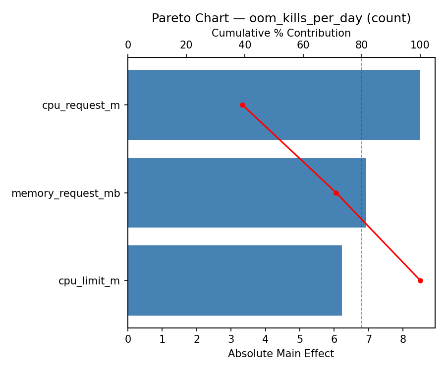
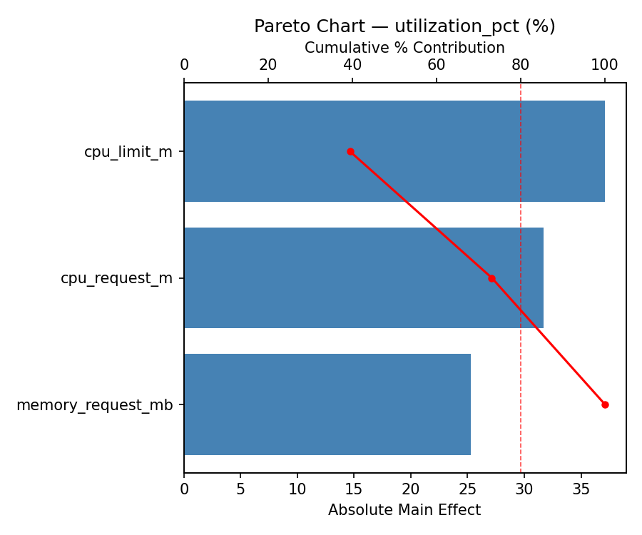
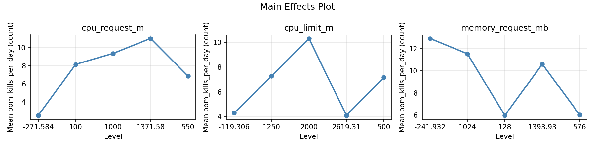
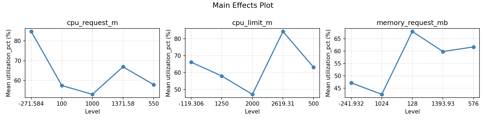
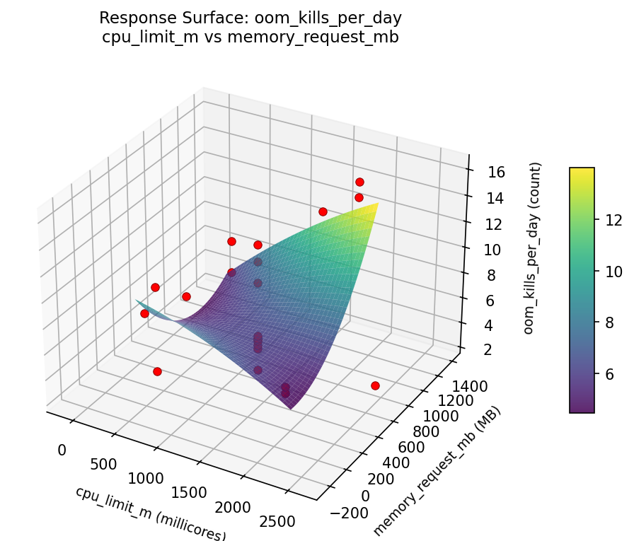
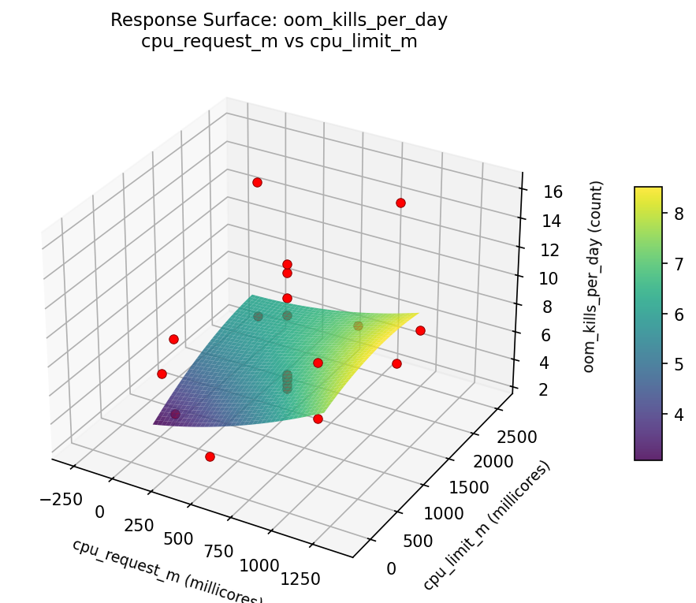
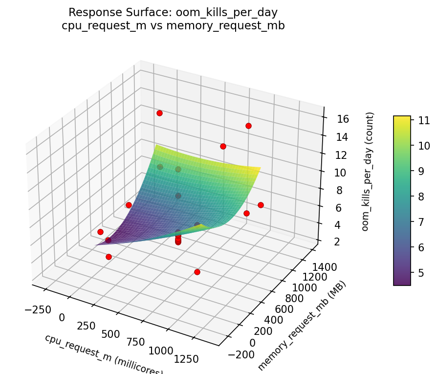
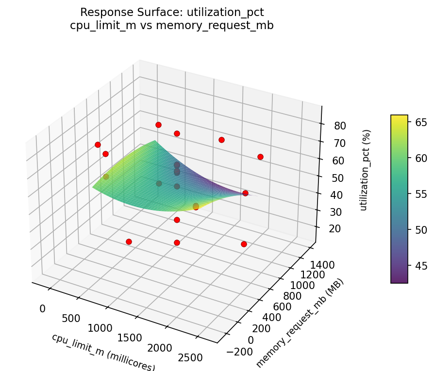
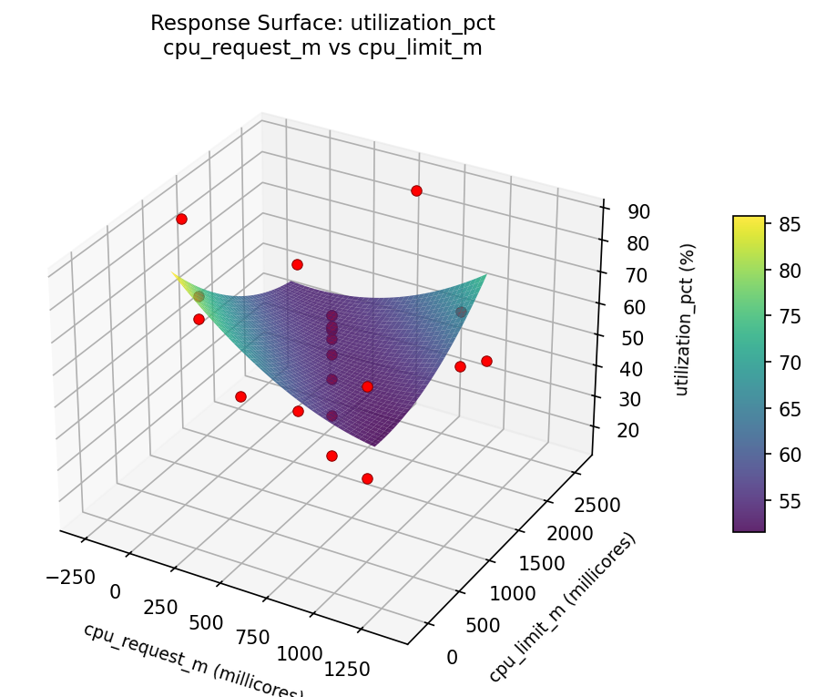

Experimental Setup
Factors
| Factor | Low | High | Unit |
|---|---|---|---|
cpu_request_m | 100 | 1000 | millicores |
cpu_limit_m | 500 | 2000 | millicores |
memory_request_mb | 128 | 1024 | MB |
Fixed: memory_limit_mb = 2048, qos_class = burstable
Responses
| Response | Direction | Unit |
|---|---|---|
utilization_pct | ↑ maximize | % |
oom_kills_per_day | ↓ minimize | count |
Configuration
use_cases/34_container_resource_limits/config.json
{
"metadata": {
"name": "Container Resource Limits",
"description": "Central Composite design optimizing CPU/memory requests and limits for utilization and stability"
},
"factors": [
{
"name": "cpu_request_m",
"levels": [
"100",
"1000"
],
"type": "continuous",
"unit": "millicores"
},
{
"name": "cpu_limit_m",
"levels": [
"500",
"2000"
],
"type": "continuous",
"unit": "millicores"
},
{
"name": "memory_request_mb",
"levels": [
"128",
"1024"
],
"type": "continuous",
"unit": "MB"
}
],
"fixed_factors": {
"memory_limit_mb": "2048",
"qos_class": "burstable"
},
"responses": [
{
"name": "utilization_pct",
"optimize": "maximize",
"unit": "%"
},
{
"name": "oom_kills_per_day",
"optimize": "minimize",
"unit": "count"
}
],
"settings": {
"operation": "central_composite",
"test_script": "use_cases/34_container_resource_limits/sim.sh"
}
}
Step-by-Step Workflow
1
Preview the design
Terminal
$ python doe.py info --config use_cases/34_container_resource_limits/config.json
2
Generate the runner script
Terminal
$ python doe.py generate --config use_cases/34_container_resource_limits/config.json \
--output use_cases/34_container_resource_limits/results/run.sh --seed 42
3
Execute the experiments
Terminal
$ bash use_cases/34_container_resource_limits/results/run.sh
4
Analyze results
Terminal
$ python doe.py analyze --config use_cases/34_container_resource_limits/config.json
5
Get optimization recommendations
Terminal
$ python doe.py optimize --config use_cases/34_container_resource_limits/config.json
6
Generate the HTML report
Terminal
$ python doe.py report --config use_cases/34_container_resource_limits/config.json \
--output use_cases/34_container_resource_limits/results/report.html
Features Exercised
| Feature | Value |
|---|---|
| Design type | central_composite |
| Factor types | continuous |
| Arg style | double-dash |
| Responses | 2 (utilization_pct ↑, oom_kills_per_day ↓) |
| Total runs | 22 |
Analysis Results
Generated from actual experiment runs using the DOE Helper Tool.
Pareto Charts
pareto oom kills per day

pareto utilization pct

Main Effects
main effects oom kills per day

main effects utilization pct

Response Surfaces
rsm oom kills per day cpu limit m vs memory request mb

rsm oom kills per day cpu request m vs cpu limit m

rsm oom kills per day cpu request m vs memory request mb

rsm utilization pct cpu limit m vs memory request mb

rsm utilization pct cpu request m vs cpu limit m

rsm utilization pct cpu request m vs memory request mb

Full Analysis Output
doe analyze
=== Main Effects: utilization_pct ===
Factor Effect Std Error % Contribution
--------------------------------------------------------------
cpu_limit_m 29.0000 3.8346 53.8%
cpu_request_m 14.9000 3.8346 27.7%
memory_request_mb 9.9750 3.8346 18.5%
=== Summary Statistics: utilization_pct ===
cpu_request_m:
Level N Mean Std Min Max
------------------------------------------------------------
-271.584 1 65.7000 0.0000 65.7000 65.7000
100 4 50.8000 21.7395 22.4000 71.5000
1000 4 59.2750 8.6199 47.2000 67.3000
1371.58 1 64.0000 0.0000 64.0000 64.0000
550 12 59.8750 20.9075 15.7000 84.7000
cpu_limit_m:
Level N Mean Std Min Max
------------------------------------------------------------
-119.306 1 37.2000 0.0000 37.2000 37.2000
1250 12 62.0667 19.6504 15.7000 84.7000
2000 4 50.2250 21.0372 22.4000 71.5000
2619.31 1 66.2000 0.0000 66.2000 66.2000
500 4 59.8500 9.5116 45.9000 67.3000
memory_request_mb:
Level N Mean Std Min Max
------------------------------------------------------------
-241.932 1 55.1000 0.0000 55.1000 55.1000
1024 4 53.2250 20.7770 22.4000 67.3000
128 4 56.8500 12.4238 45.9000 71.5000
1393.93 1 63.2000 0.0000 63.2000 63.2000
576 12 60.8250 20.9211 15.7000 84.7000
=== Main Effects: oom_kills_per_day ===
Factor Effect Std Error % Contribution
--------------------------------------------------------------
cpu_limit_m 6.8500 0.8518 38.6%
memory_request_mb 5.8000 0.8518 32.7%
cpu_request_m 5.1000 0.8518 28.7%
=== Summary Statistics: oom_kills_per_day ===
cpu_request_m:
Level N Mean Std Min Max
------------------------------------------------------------
-271.584 1 10.1000 0.0000 10.1000 10.1000
100 4 10.5000 4.8298 4.8000 16.1000
1000 4 8.4250 3.9534 5.0000 12.9000
1371.58 1 5.4000 0.0000 5.4000 5.4000
550 12 6.2167 3.6680 2.5000 14.9000
cpu_limit_m:
Level N Mean Std Min Max
------------------------------------------------------------
-119.306 1 6.3000 0.0000 6.3000 6.3000
1250 12 6.6250 3.7907 2.5000 14.9000
2000 4 11.1500 1.8448 8.8000 12.9000
2619.31 1 4.3000 0.0000 4.3000 4.3000
500 4 7.7750 5.5524 4.8000 16.1000
memory_request_mb:
Level N Mean Std Min Max
------------------------------------------------------------
-241.932 1 9.4000 0.0000 9.4000 9.4000
1024 4 8.2250 3.7915 4.8000 12.3000
128 4 10.7000 4.8339 5.0000 16.1000
1393.93 1 4.9000 0.0000 4.9000 4.9000
576 12 6.3167 3.7143 2.5000 14.9000
Optimization Recommendations
doe optimize
=== Optimization: utilization_pct ===
Direction: maximize
Best observed run: #17
cpu_request_m = 1000
cpu_limit_m = 2000
memory_request_mb = 1024
Value: 84.7
RSM Model (linear, R² = 0.1981, Adj R² = 0.0644):
Coefficients:
intercept +58.5682
cpu_request_m +9.0044
cpu_limit_m +1.8856
memory_request_mb -2.6654
RSM Model (quadratic, R² = 0.5058, Adj R² = 0.1352):
Coefficients:
intercept +55.3642
cpu_request_m +9.0044
cpu_limit_m +1.8856
memory_request_mb -2.6654
cpu_request_m*cpu_limit_m +11.8875
cpu_request_m*memory_request_mb +5.3625
cpu_limit_m*memory_request_mb -6.3125
cpu_request_m^2 +0.3020
cpu_limit_m^2 +0.0020
memory_request_mb^2 +4.5020
Curvature analysis:
memory_request_mb coef=+4.5020 convex (has a minimum)
cpu_request_m coef=+0.3020 convex (has a minimum)
cpu_limit_m coef=+0.0020 negligible curvature
Notable interactions:
cpu_request_m*cpu_limit_m coef=+11.8875 (synergistic)
cpu_limit_m*memory_request_mb coef=-6.3125 (antagonistic)
cpu_request_m*memory_request_mb coef=+5.3625 (synergistic)
Predicted optimum (from quadratic model):
cpu_request_m = 1000
cpu_limit_m = 2000
memory_request_mb = 128
Predicted value: 86.5631
Model quality: Moderate fit — use predictions directionally, not precisely.
Factor importance:
1. cpu_request_m (effect: 38.3, contribution: 43.5%)
2. cpu_limit_m (effect: 32.4, contribution: 36.7%)
3. memory_request_mb (effect: 17.5, contribution: 19.8%)
=== Optimization: oom_kills_per_day ===
Direction: minimize
Best observed run: #17
cpu_request_m = 1000
cpu_limit_m = 2000
memory_request_mb = 1024
Value: 2.5
RSM Model (linear, R² = 0.0974, Adj R² = -0.0531):
Coefficients:
intercept +7.5364
cpu_request_m -1.0013
cpu_limit_m -0.1204
memory_request_mb +1.0992
RSM Model (quadratic, R² = 0.4981, Adj R² = 0.1217):
Coefficients:
intercept +10.1548
cpu_request_m -1.0013
cpu_limit_m -0.1203
memory_request_mb +1.0992
cpu_request_m*cpu_limit_m -2.0000
cpu_request_m*memory_request_mb -1.3500
cpu_limit_m*memory_request_mb -0.2000
cpu_request_m^2 -1.1842
cpu_limit_m^2 -1.3342
memory_request_mb^2 -1.4092
Curvature analysis:
memory_request_mb coef=-1.4092 concave (has a maximum)
cpu_limit_m coef=-1.3342 concave (has a maximum)
cpu_request_m coef=-1.1842 concave (has a maximum)
Notable interactions:
cpu_request_m*cpu_limit_m coef=-2.0000 (antagonistic)
cpu_request_m*memory_request_mb coef=-1.3500 (antagonistic)
Predicted optimum (from quadratic model):
cpu_request_m = 100
cpu_limit_m = 2000
memory_request_mb = 1024
Predicted value: 11.3574
Model quality: Weak fit — consider adding center points or using a different design.
Factor importance:
1. memory_request_mb (effect: 4.8, contribution: 39.1%)
2. cpu_request_m (effect: 3.8, contribution: 31.4%)
3. cpu_limit_m (effect: 3.6, contribution: 29.5%)